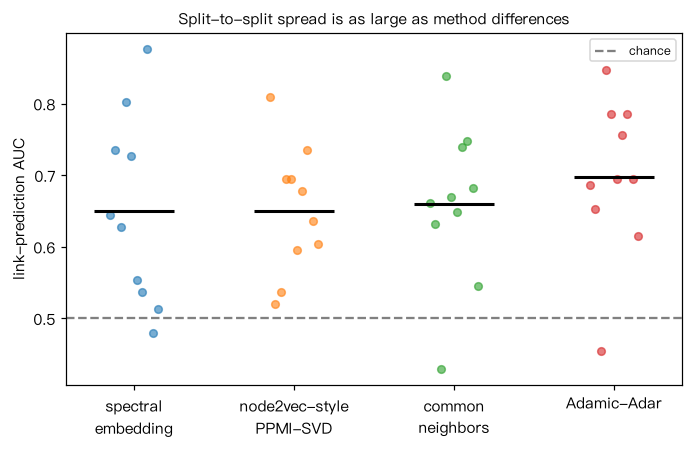

Example11 / 13
节点嵌入——谱嵌入、node2vec 式随机游走嵌入与简单基线的链接预测比较
从空手道网络中随机隐藏 15% 的边作为测试正例，并抽同样数量的非边作为负例；只在剩余网络上学习。 (1) 拉普拉斯特征映射：对称归一化拉普拉斯最小的非零特征向量作为 d 维坐标； (2) node2vec 式嵌入：二阶有偏随机游走（返回参数 p、进出参数 q），统计窗口内共现， 做正点互信息（PPMI）矩阵并截断 SVD——这与 DeepWalk/skip-gram 的矩阵分解解释相对应（Qiu 等 2018）； (3) 基线：共同邻居数、Adamic–Adar 指数。打分用嵌入向量的内积，评价用 AUC。 解读：比较的是 10 次随机划分的均值 ± 标准差；方法之间的差距要和划分间的波动对照着看。 任何嵌入方法都要和共同邻居这类无需训练的基线比较，且测试边不能参与嵌入的学习（否则就是泄漏）。
Output输出图

Output文字输出
每次划分：测试正例 11 条、负例 11 条；共 10 次划分 谱嵌入（内积） AUC = 0.650 ± 0.126 node2vec 式 PPMI-SVD（内积） AUC = 0.650 ± 0.085 共同邻居 AUC = 0.660 ± 0.107 Adamic–Adar AUC = 0.697 ± 0.104
Code代码
# 从空手道网络中随机隐藏 15% 的边作为测试正例，并抽同样数量的非边作为负例；只在剩余网络上学习。
# (1) 拉普拉斯特征映射：对称归一化拉普拉斯最小的非零特征向量作为 d 维坐标；
# (2) node2vec 式嵌入：二阶有偏随机游走（返回参数 p、进出参数 q），统计窗口内共现，
# 做正点互信息（PPMI）矩阵并截断 SVD——这与 DeepWalk/skip-gram 的矩阵分解解释相对应（Qiu 等 2018）；
# (3) 基线：共同邻居数、Adamic–Adar 指数。打分用嵌入向量的内积，评价用 AUC。
# 解读：比较的是 10 次随机划分的均值 ± 标准差；方法之间的差距要和划分间的波动对照着看。
# 任何嵌入方法都要和共同邻居这类无需训练的基线比较，且测试边不能参与嵌入的学习（否则就是泄漏）。
import numpy as np
import networkx as nx
def auc(pos, neg):
pos, neg = np.asarray(pos), np.asarray(neg)
return (np.sum(pos[:, None] > neg[None, :]) + 0.5 * np.sum(pos[:, None] == neg[None, :])) / (len(pos) * len(neg))
def node2vec_walks(G, num_walks, length, p, q, rng):
nbrs = {v: list(G.neighbors(v)) for v in G}
walks = []
for _ in range(num_walks):
for s in rng.permutation(list(G.nodes())):
walk = [s]
while len(walk) < length and nbrs[walk[-1]]:
cur = walk[-1]
if len(walk) == 1:
walk.append(rng.choice(nbrs[cur])); continue
prev = walk[-2]
w = np.array([1 / p if x == prev else (1.0 if G.has_edge(x, prev) else 1 / q) for x in nbrs[cur]])
walk.append(nbrs[cur][rng.choice(len(w), p=w / w.sum())])
walks.append(walk)
return walks
def ppmi_svd_embedding(G, dim, rng, p=1.0, q=1.0, window=3):
n = G.number_of_nodes()
C = np.zeros((n, n))
for walk in node2vec_walks(G, 20, 20, p, q, rng):
for i, u in enumerate(walk):
for v in walk[max(0, i - window): i] + walk[i + 1: i + 1 + window]:
C[u, v] += 1
total = C.sum(); row = C.sum(1, keepdims=True); col = C.sum(0, keepdims=True)
with np.errstate(divide="ignore", invalid="ignore"):
pmi = np.log(C * total / (row * col))
M = np.where(np.isfinite(pmi) & (pmi > 0), pmi, 0.0)
U, S, _ = np.linalg.svd(M)
return U[:, :dim] * np.sqrt(S[:dim])
def spectral_embedding(G, dim):
L = nx.normalized_laplacian_matrix(G, nodelist=range(G.number_of_nodes())).toarray()
vals, vecs = np.linalg.eigh(L)
return vecs[:, 1:dim + 1]
G = nx.karate_club_graph()
edges, non_edges = list(G.edges()), list(nx.non_edges(G))
results = {k: [] for k in ["谱嵌入（内积）", "node2vec 式 PPMI-SVD（内积）", "共同邻居", "Adamic–Adar"]}
for split in range(10): # 10 次随机划分：单次划分的测试边太少，波动很大
rng = np.random.default_rng(split)
test_pos = [edges[i] for i in rng.choice(len(edges), int(0.15 * len(edges)), replace=False)]
test_neg = [non_edges[i] for i in rng.choice(len(non_edges), len(test_pos), replace=False)]
G_train = G.copy(); G_train.remove_edges_from(test_pos)
Z_spec = spectral_embedding(G_train, 4)
Z_n2v = ppmi_svd_embedding(G_train, 8, rng, p=1.0, q=0.5)
scores = {
"谱嵌入（内积）": lambda u, v: Z_spec[u] @ Z_spec[v],
"node2vec 式 PPMI-SVD（内积）": lambda u, v: Z_n2v[u] @ Z_n2v[v],
"共同邻居": lambda u, v: len(list(nx.common_neighbors(G_train, u, v))),
"Adamic–Adar": lambda u, v: next(nx.adamic_adar_index(G_train, [(u, v)]))[2],
}
for name, f in scores.items():
results[name].append(auc([f(u, v) for u, v in test_pos], [f(u, v) for u, v in test_neg]))
print(f"每次划分：测试正例 {len(test_pos)} 条、负例 {len(test_neg)} 条；共 10 次划分")
for name, r in results.items():
print(f"{name:28s} AUC = {np.mean(r):.3f} ± {np.std(r):.3f}")
# 作图：10 次随机划分的 AUC（点）与均值（横线）
import matplotlib.pyplot as plt
fig, ax = plt.subplots(figsize=(6.4, 4.2))
en = ["spectral\nembedding", "node2vec-style\nPPMI-SVD", "common\nneighbors", "Adamic-Adar"]
for j, r in enumerate(results.values()):
ax.plot(np.full(10, j) + np.linspace(-0.15, 0.15, 10), r, "o", alpha=0.6, ms=5)
ax.hlines(np.mean(r), j - 0.25, j + 0.25, color="k", lw=2)
ax.axhline(0.5, color="gray", ls="--", label="chance")
ax.set_xticks(range(4)); ax.set_xticklabels(en); ax.set_ylabel("link-prediction AUC"); ax.legend(fontsize=8)
ax.set_title("Split-to-split spread is as large as method differences", fontsize=10)
plt.tight_layout(); plt.show()Run在浏览器中运行
首次加载 Python 环境约需 20–40 秒；可以修改参数后重新运行。